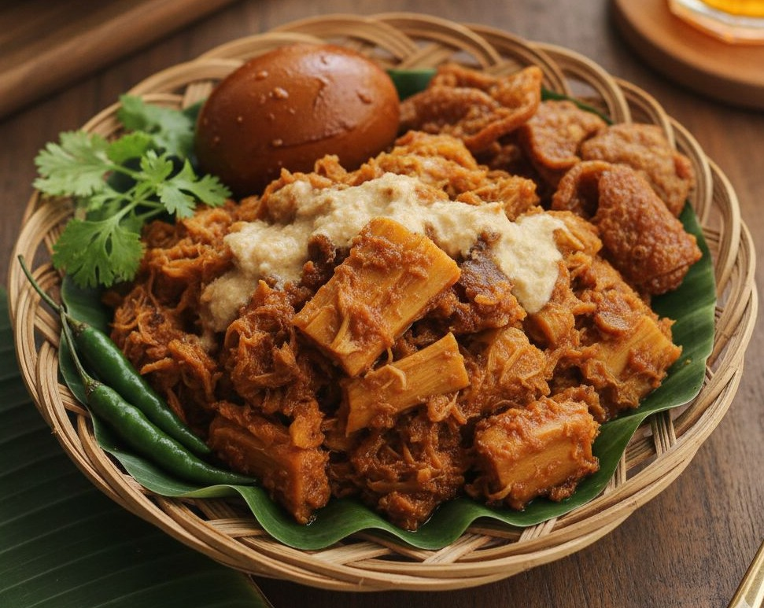
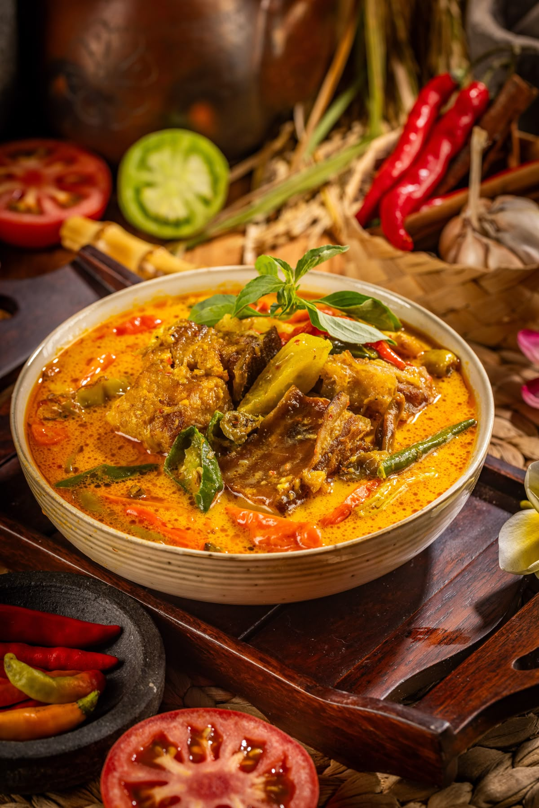
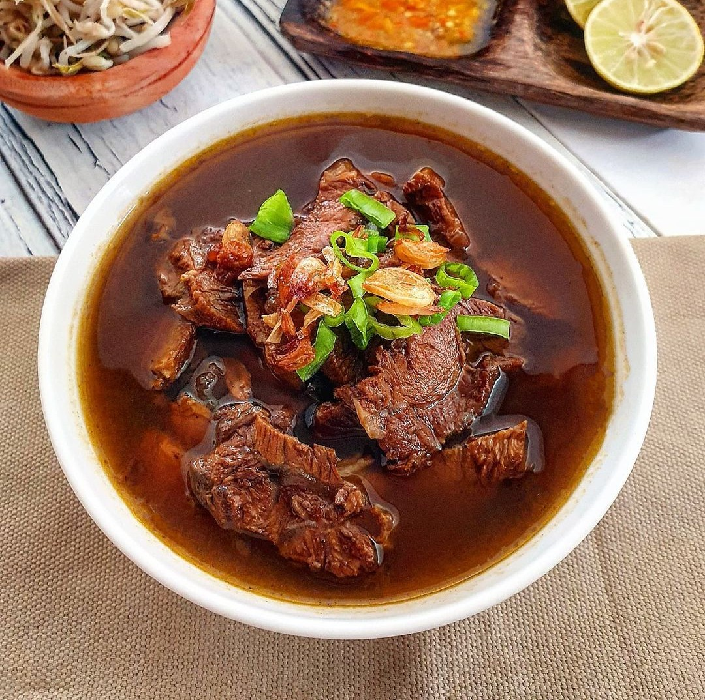

Menu Kuliner

Rendang
Asal: Sumatera Barat
Daging sapi dimasak lama dengan santan dan rempah khas Minang hingga kering dan kaya rasa.

Gudeg
Asal: Yogyakarta
Nangka muda dimasak santan dengan gula aren dan daun jati; manis dan gurih.
Sate Lilit
Asal: Bali
Ikan cincang berbumbu dililitkan pada batang serai lalu dibakar hingga harum.

Soto
Asal: Berbagai daerah
Sup berempah dengan daging/ayam, bihun, dan taburan bawang goreng.

Gulai
Asal: Sumatera
Kuah santan berempah berisi daging, ikan, atau sayur; gurih dan harum.

Nasi Goreng
Asal: Nasional
Nasi digoreng dengan bumbu bawang dan kecap, disajikan dengan telur dan ayam.
Pempek
Asal: Palembang
Olahan ikan dengan tepung tapioka, disajikan bersama kuah cuko pedas manis.

Rawon
Asal: Jawa Timur
Sup daging hitam dari kluwek, disajikan dengan tauge dan nasi hangat.